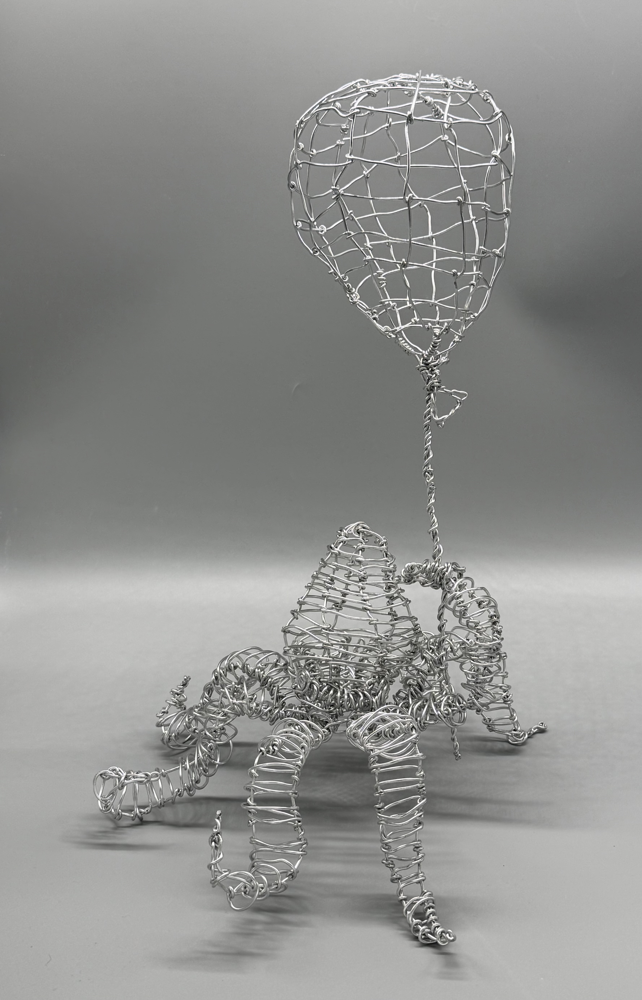

Details
Wire Sculpture
Aluminum wire
Dimensions: 16 × 9 × 10 inches
Can be displayed standing or suspended
About the Work
This sculpture depicts an octopus holding a balloon. I shaped and connected aluminum wire to build both forms, leaving their structures open and visible.
The story is about a creature from the water wanting to reach the air. I connect this desire with my own feelings of wanting to escape a difficult situation, leave a part of my life behind, or change how I live. Like the octopus trying to leave the water, reaching a different environment can feel difficult.
The balloon represents the possibility of reaching somewhere new. I wanted to express the desire for change, a feeling that I think many people can recognize.